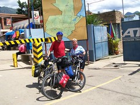
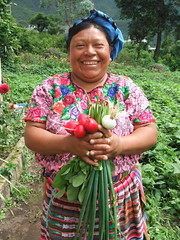
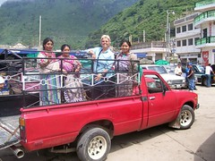
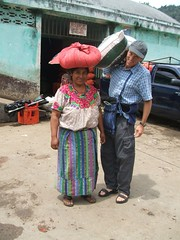
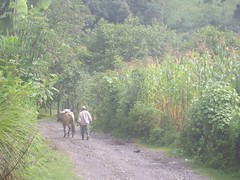
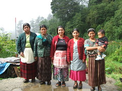

Trip Blog
Narco-Traffickers in Mexico
Our entire experience of Mexico has been of a very tranquil country, with wonderful people. We haven't had to worry about our safety anywhere (except on the roads, of course, and you've already read about our safety situation on the road, or will below). It doesn't feel like we have to do much at all to keep our stuff safe, and we've had absolutely no issues with our personal safety; knock on wood.
That said, we also read the newspapers. And Mexico is in big trouble with its/our narco-trafficking problem (since the US is the primary consumer, it's a problem shared by both the US and Mexico). Big trouble. Even when you factor in that the media is fascinated with the subject and maybe they've overblown it, you still have daily assassinations of policemen, more than 1000 in the country so far this year. It seems that every day somewhere in the country a dismembered human head will be delivered to a police station with a "narcomessage" threat. Observers think that some parts of the police are clearly compromised by the drug traffickers. And reporters (print and media) are also being targeted at a rate almost as high as anywhere in the world. (Remember that all our information is coming from the newspapers. And remember what you learn from the your local papers: If you just watch the news and read the newspapers you'll think that murders and shootings are happening everywhere on every corner, even in your neighborhood, and they're not.)
We have not talked with a single person who has been directly impacted by this horror, so it's doesn't seem to be the daily experience of average Mexicans. However, the newspapers certainly indicate a nationwide problem, even if you factor in their sensationalism.
My opinion is that Mexico has a huge problem that threatens seriously its law enforcement, judicial system, and freedom of the press. We haven't (yet?) been to Colombia, but it seems like if you continue on the path that Mexico is currently on, you end up with what I imagine Colombia has, a completely compromised government and judicial system. We hope that Mexico can find another path.
REMEMBER: We haven't talked with a single person in Mexico who has been directly affected by this cancer.
Mexico Map and GPS Resources for the touring cyclist
If you're seeking the back roads of Mexico, you need good maps.
All of our routes are shown on the hobobiker under routes - we have maps and the distance and elevation information. The Mexico routes and info are here and if you need anything else we can give you we'll certainly try to provide it. Send us a note.
We delighted in two geographic resources for Mexico.
- The Guia Roji "Por las carreteras de Mexico" available from Amazon.com and in bookstores and the like in every major Mexican city. It is up-to-date and has excellent detail. We just ripped out the pages we didn't need.
- In our Garmin GPS we used the excellent Bicimapas GPSmap available from Mexicomaps.com. It wasn't perfect and in some cases missed new roads, but it showed some amazingly good detail.
Palenque - Maybe the coolest ruin in the Americas

This weekend we took the bus to Palenque, which has to be one of the most beautiful and interesting ruins of all the Americas. Yes, it ranks with Macchu Picchu in Peru. We took the bus on the 5-hour windy mountain road through incredibly lush, green brutal mountains. This would have been our preferred route for biking, but unfortunately the security situation on this road for cyclists is the worst we've heard about in all of the Americas. It's the one road that we've been warned about over and over - cyclists are robbed here every year. It's Zapatista territory, and that seems to have given rise to more lawlessness than is normal in Mexico.
But Palenque was just awesome. We spent the night and spent several hours wandering in the beautiful jungle setting. Every hill rising out of the jungle park ends up being a pyramid which has yet to be uncovered - in spite of the 3% of the ruins that we see, with incredible temples and art, the jungle still covers more than 1000 unexcavated structures, most of which will remain unexcavated due to national park protection of the land and scarce resources to open new sites.
I've been to Tikal and Chichen Itza and Macchu Picchu and Teotihuacan, and they're all incredible. But I think Palenque will remain my favorite ruin of all time. We'll have more pictures of it for you later in the month.
We'll be starting south for Guatemala either this weekend or early next week. It's not very far away, so by the end of next week, we may be posting from Guatemala!
Guatemala!

We rode into Guatemala yesterday, after four and a half months and 2800 miles in our beloved Mexico. We had no border problems, no corrupt border officials, no cheating money changers, and not even any kids swarming around us asking for gifts.
Some things have changed - people seem even more friendly. Lots of people cry out "Gringo" or "Bye Bye", or just give us the thumbs up or honk at us. Today in a huge climb back up into the highlands we actually had a shoulder for many, many miles. Bananas have a different name in Guatemala, and we have to get used to Quetzals instead of Pesos. And the speed bumps are called tumulos instead of topes.
So far the riding has been absolutely beautiful, with green mountains soaring up on both sides of us. A bit too much traffic, but a little bit of shoulder makes up for some of that.
So far, so good! Our fourth country in the Americas.
Leaving Mexico and entering Guatemala.
I had heard so many different stories about this country, I did not know what to expect. Would the border crossing be dangerous, with hordes of kids overwhelming us and perhaps slashing our pannier? Would the border immigration officials try to charge us horrendous fees? Would the money changers rip us off? As we rode the hot flat road toward the border, my stomach had a twisted knot and my head hurt. What would happen to us?
I balked at the border before crossing and needed several hours to build up my nerve and build up my courage. Several hours later, we handed in our Mexico Tourist Visa and rode up the 4k mountain to the Guatemala border post.
None of my fears materialized. The other side of the border was extremely busy with small stalls full of every kind of merchandise one could ever want to buy but everyone just ignored us. The border guard did not demand any payment and even gave us a 90 day visa – we’ve heard that many tourists get only 15 days. The money changer gave us a fair rate. And we had a delicious baked chicken plate at a small Honduran restaurant. All went well, we rode in 15 miles from the border and got a cheap hotel room for the night.
The only real change that I noticed right away was that people near the border were friendlier than anywhere else we had ridden, with waves, whistles, and yells of encouragement. The only thing that bothered me was the big old school buses which have been converted to public transportation buses. The go very fast, bombing down the two lane roads through congested towns spewing exhaust. They lay on those awful, awful air horns which seemed to say, “Hey, I am coming through and I don’t slow down for anything and by the way you are in my way”. I tried to figure the rules of the road in this new country as I dive off the road and let them by.
Riding the Guatemala Highlands
We didn't really know what we were getting into when we heard about the beautiful new road that runs east from Huehuetenango (Way-Way-tenango) - everybody said it had just opened and was a great new road. But it sounded like low traffic and a good road, so we took it. It was probably some of the best riding we've had on the trip. Almost no traffic, beautiful road surface, and sometimes even and shoulder!
It's all huge, brutal, beautiful green mountains. We've never seen so much green. The landscape looks like a quilt because of the efficient agricultural use of this land. In every village and along every road we meet colorful indigenous people who smile and say hi or call out to us, impressed by our trip. Often we hear someone yelling out "bye-bye" in English or the young children come running out of their house, waving and in unison cryout "Gringo Gringo". Nancy usually responds with Ninos! Ninos! (children, children) and gives a hearthy wave back.
In every village the people have a different "tipica" outfit, and the women's outfits are just absolutely gorgeous. I don't know what it would be like to live in a village where all the women wore the same dress every day, but the dresses they wear are beautiful. And each one tells a specific story; the women weave their own "huipiles", and it often requires three months of near-full-time effort to weave one.
The mountains are just glorious, but it's the steepest riding we've ever done with a load. There was some weeping and nashing of teeth on some of the hills. But overall, I'll bet we'll remember our ride from Huehuetenango to Sacapulas to Quiché to Chichicastenango as one of the best stretches we've ever ridden.
The climate is shockingly delightful. While many of you are suffering through the heat of a North American summer, we're luxuriating in cool mornings and comfortable sunny days. We've been at about 6500 feet (2000 meters) for the last few days. When we go higher, it can get almost uncomfortably cool, but at this level it's like paradise. This is pretty surprising. Altitude and topography count more in climate than latitude!
Volunteering for Kiva.org - A Major Change of Pace!
As we were riding through Mexico, we were really impacted by the poverty we saw, and became tremendously interested in the concept of microfinance, the practice of offering small loans ($100-$1000, usually), without requiring collateral, to tiny businesses. It turns out that last year's Nobel Peace Price winner, Mohammed Yunus, is the originator of the concept, and his book "Banker to the Poor" is tremendously inspiring. What they did with tiny, collateral-free loans in Bangladesh is the most hopeful story about alleviating poverty that I've ever heard in my life.
After hearing about microfinance, we heard about the newish website Kiva.org, which is extending the idea by another level. It allows lenders in the rich part of the world to make small loans (almost) directly to tiny businesses in the more resource-challenged parts of the world, using nothing but a credit card. It's a wonderful new source of capital for the developing world's tiny businesses.
Anyway, we've been accepted as "Kiva Fellows", and will be helping the people of Friendship Bridge to put their clients on the Kiva website. for the last three days we've been traveling to villages, meeting women who are taking out the loans, taking their pictures, writing down their stories, etc. Before long they'll start appearing on the Kiva website. We'll tell you some of the stories here too.
Friendship Bridge is a marvelous organization that makes loans and education for women and their children a major priority. Almost all their clients are the indigenous Maya women of Guatemala, starting and growing little businesses, things like buying a cow or getting additional inventory for a little store, or buying material for their weaving business. We encourage you to visit their website and view the excellent videos they have there.
We'll be updating you on what we see and learn.
Where We Are - Early July 2007

In the past month we rode from the southern part of Oaxaca, Mexico along the Pacific coast for a few days, then up a huge climb into the mountains of Chiapas. Nancy liked the climate so much when we got up into the mountains that we stayed for two weeks and she studied Spanish. When we got going again, it was just a few days into Guatemala and then a glorious week or so exploring the green, mountainous western highlands of Guatemala.
Thanks for following along with us!
-Randy and Nancy
Donde Estamos, Julio de 2007
En este mes pasado andamos desde el sur de Oaxaca en la costa unos días, y entonces tuvimos una subida muy grande hasta las montañas de Chiapas. A Nancy le gustó tanto el clima, que nos quedamos allí dos semanas para estudiar español. Después de eso, pasamos en pocos días hasta Guatemala y una semana bonita de las montañas de su oeste.
Nuevas Fotos
Hay muchas fotos nuevas:
¡Nos agradece que estás siguiendo con nosotros!
-Randy y Nancy
Nancy's Second Day of Interviews
Patti (the Friendship facilitator) and I hopped into the taxi (really the back of a pickup). We snaked our way along the shore and up the side of a mountain -- the view was incredible. As I looked across the emerald lake toward the towering volcanoes, I wondered how such a beautiful place could house such incredible poverty.
All day I sat with the Mayan women in their homes, business and community center learning about their struggles, victories and dreams.
These people had been living in a war-torn area for twenty years only to be further pummeled by the incredible natural disaster Hurricane Stan in 2005. The torrential rains as a result of the hurricane washed away many communities. Whole neighborhoods no longer exist because of the mudslides that swallowed up the land the neighborhood sat on and with it thousands of people. It threw these people further into grave poverty.
Poverty is when people who have never had a day of schooling and have no resources to obtain the basics and no access to funds to take care of medical or dental emergencies then lose everything in a natural disaster. Some of the women have no shoes for themselves or their children. Most of the women I interviewed never went to school but know the value of schooling are struggling to figure out how to pay for their children's education. The children have to wear shoes to school and need notebooks and pens. Many families just cannot afford this and are lucky to be able to feed their children. Some do not have electricity or running water. Some have electricity to their house but no lights are on. Perhaps they can not afford light bulbs or the electricity or probably both. When the family has food shortages, this is poverty. When a person has a rotten tooth and it hurts and keeps them up all night and there is nothing they can do about it because there is no money for a dentist, I see this as poverty. The poverty in this town is great.
The women are survivors because they have no choice. They deal with what they are dealt. If they lose everything but the shirt on their backs, they sell that shirt so they can take care of their family. One woman did sell one of her two huipiles, her hand woven top, which cost over $100. It was all she had after the hurricane took everything, including her home.

In order to weave they seek out loans to buy materials. Before the loans they could only afford material for one product, then wait until it sold and buy the material for the next. With the loans the women can buy enough material to make a few products and sell many more. At other times the loan may be used to send the children to school or just to buy food. The women repay the loan every month and usual pay off the few hundred dollars they borrow in six or nine months. Before microfinance there was little hope to crawling out of poverty, but at least now the families have some hope and room for dreams.
As I came home after the day of interviewing, the women’s stories, tears, smiles and laughter stuck deep in my soul. I will never be the same, I am so thankful for being able to have a day like this.
Randy and I will travel around Guatemala for at least another 10 weeks, interviewing the women thoughout this country and capturing a moment of their lives.
The ride to Xela (Quetzaltenango)
What we're doing in our daily work
During the week, we go to a village every morning and meet with one of the women who are the workhorses of Friendship Bridge, the "facilitators". These are the women who form the credit groups and know all of FB's clients. The facilitator will take us to one of more of the clients' homes and may stay with us or may deliver us over to the women. We then sit down and chat with as many as six or seven families, one at a time, about their business, their life, and what they're doing with their loan.
But some background: Many of the women don't speak Spanish. There are 22 different Mayan languages spoken in Guatemala, and in some of these areas Spanish is not even a second language, it's a foreign language. And of course Spanish is not our native tongue. So sometimes there's a lot of interpreting to do. Somebody has to bridge it, sometimes the facilitator, sometimes a husband or cousin. And don't you think it's a little strange having a middle-aged gringo couple come up the path to your house to ask how you're using your loan? And how are we supposed to explain to them that their picture and their story is going up on Kiva's website to help fund their loans, when they have no idea what a website or the internet is? (Some women do understand, but the eyes of the majority glaze over when we talk about the "Internet" and a "website").
We try to start by introducing ourselves, how old we are, about our bike trip, how many kids we have, etc. Then we ask them to tell us something about their business, how it got started, etc. Then we pump them with a pile of other questions about the family and the business. Finally, we take some digital photos of them in their business environment, which may be a loom, a store, or a pigpen. In the end, we come away feeling like we understand something. Sometimes what we understand is that they're living a pretty rough life.
At the end of the day we go back to the hotel and gather our notes and our interview sheets and write up the profiles for the women before we forget what we're about. We try to pick out a good picture before we forget what face goes with what name.
At the end of the week or two weeks we might spend a whole day uploading all the profiles and pictures to the Kiva.org site. Friday we uploaded 38 profiles that will raise new loan funds for 38 women. It's pretty exciting stuff.
By the way, you might get a chance to invest in one of these loans if you go to Kiva.org, click on "Lend" and select "Central America" for the region. You can look all the current Friendship Bridge loans that are needing to be funded - often they're already funded, so just go to Kiva and fund somebody else!
You can also browse through all stories of the Friendship Bridge women even though they're already funded.
What is Microfinance Anyway?
The amazing man who won last year's (2006) Nobel Peace Prize pioneered the use of tiny loans without a requirement for collateral or security to poor people. Mohammed Yunus maintains with great success that if you just give poor people access to capital, they can make their own way in the world with their own businesses. His book, Banker to the Poor, is worth every minute of the time you take to read it - it's in every library and every bookstore and here on Amazon.com. It's the most hopeful book about poverty in the world that you will ever read. Yunus, with 25 years of experience in this, maintains that poor people pay off their loans at a much higher rate than the rich ones, and that simply providing capital in amounts like $100-$500 can transform the life of the poor by enabling them to start their own tiny businesses.
Friendship Bridge is a microcredit organization operating along the lines of Mohammed Yunus's Grameen Bank. It makes small loans with no collateral requirement to poor women in western Guatemala. We're riding around the entire region interviewing these women and seeing a little of their lives.
And Kiva.org is an upstart that has found a new way to fund the loans offered to the poor by microcredit outfits like Friendship Bridge - by bringing the stories of the poor right to the web browsers of the richer parts of the world, so they can make loans right from their computers. The money loaned by gringos is then channeled through microcredit organizations like Friendship Bridge to the poor who need the loans.
We sure encourage you to get involved with microfinance by making a loan (or many of them - it's addictive) on Kiva.org or making a gift on FriendshipBridge.org.
Women We've Met Recently
Last week Nancy met Clara Ajsoc in the highland village of Santa Clara La Laguna. Clara used her Friendship Bridge loan to buy a calf, which she raised, only to lose it to a sudden illness, leaving a young calf behind. But she bottlefed that one and raised it up successfully, and she now sells milk and cheese, where she had no livelihood before. And she wants to get another calf.
In San Antonio La Laguna, Nancy met Catarina Cox Perez, who lost her house to Hurricane Stan in October, 2005. She has been patching it back together bit by bit, but she lives in a really bad piece of broken house with no real windows, and she has to pile rocks up in the broken windowframes for a little privacy. But Catarina's big goal with her next loan is to buy and raise 24 chicks. More power to her. There's the great power of microfinance.
We've also met lots of more mundane people, storekeepers and weavers and clothing sellers, who are just battling the day-to-day struggle to pay for their kids'education. For them to come up with those few dollars per month for school fees and notebooks is an amazing battle. But so many assure us that they're absolutely committed to their kids having a better life. And almost all we've met have kids who are getting at least some education. We've met many, many women who have absolutely no education. They sign their loan papers with a thumbprint. It's just the normal way.
Yesterday we turned up a street out of the village we were in and then off that onto a path up into the hills. It was maybe a half a mile to a set of houses along a creek that were quite a bit more primitive than most we'd visited. Elena Coché, whose family is trying to get buy reselling a few clothes on the street. Their house is of wood, and they have to get water from a "well"set in the side of the creek bank; the kids get sicker in the rainy season.
You can look through all the stories of the women we've met on the Kiva site. To see if there are any available to make loans to, click here.
If you search for "in need" businesses, you may not find any on a particular day, because people seem to snatch them up. But go ahead and fund a businessperson in a different part of the world anyway. It's loads of fun.
Women we visited in La Estancia de la Cruz

Berta in La Estancia
The women we visited Tuesday in La Estancia de la Cruz have been working in the fields all their lives and they know no other way to make a living. As young children they did not go to school because they needed to help the family in the fields. The land here is very rich because the volcanic soil and the 6 months of rain.
None of the women we met with today own their own land. They rent a plot and also work for someone else. With the help from Friendship Bridge, the women are able to rent a 40'x40' plot and grow their own flowers and vegetables. They have a chance to dream and maybe educate their children if there is enough money to buy shoes, paper, pencils and needed supplies. Currently some families do not send their children to school either because they need the help in the field or they just do not have the money to send the children to school.
The month of July is known as the hunger time because the food they had stocked piles are nearly depleted The growing season is February to August and they corn is not ready to harvest.
After interviewing the women, writing their individual stories and taking wonderful photographs of the women in their traditional colorful Mayan clothing, we got ready to leave. One woman stood in the middle of the concrete block room, just a few feet away from us asked if we could help the group of 20 women with some food. Randy and I looked at each other and were taken by surprise at this humble request. We asked what kind of food they needed. She replied that they where thinking of rice, beans, corn, oil and sugar. After Randy and I talked a bit we agreed and set an amount we where willing to help out with which was 250 Queztals.

In the bus with the women
Three women from the group took us out to the main road and we climbed in the back of pickup, the standard taxi or local bus in this area. We travelled for 10 miles up and over the ridge and down to the market place in the village of Zunil.
Randy explained in Spanish that what he and I had agreed and the women could decide how to spend it. They could spend it on rice, corn, oil, and sugar or any combination They math was somewhat hard for these women but the three women worked together and worked on the market vendors to give them the best price for the money. In the end they bought 40 pounds of sugar and one bag of 100 lbs of dried corn. This would be divided up among 20 families. We thought later 100 pounds was not really enough and we should have bought another 100lbs.
As I was standing there wondering how these women would carry a hundred pounds sack of corn, all three women took off their shawls and started filling it with the dried corn. When each shawl had 20lbs of dried corn, they tied the shawl up and put the bundle on top of heads and balanced the load. Randy carried out the remaining corn on his shoulder to the taxi loading area. The women gave us hugs and kisses, thanking us for the help and wished us luck on our journey back to Quetzaltango.

Corn on her head and Randy's shoulder
As we walked to the bus stop, I thought of what and amazing experience to be able to help out in this way. To be able to meet these women in their homes, see the reality of their need. And then get in a pickup truck to the village and go with them while they picked out the most needed items for the women and their families.
I have given money to charity in far off places before and it did give me a wonderful feeling. But this was far more amazing. I could not believe we could experience giving to this extent and to really understand the need and the impact.
If you wonder how much 200 Quetzals is, it is about what a family in the United States would pay to go out to the movies, not including popcorn, drinks or candy. Or it is equal to the cost of a couple of pizzas.
Guatemala's GNP: Cellphones and Politics
Judging from the number of places that sell cellphones and prepaid cards, cellphones must account for about 50% of the GNP of Guatemala. Today we were out in a pretty remote village where the women scratch together money to rent a small plot on which to grow onions. They have next to nothing. But a phone rang somewhere and our hostess pulled a cellphone out of her brassierre...
Now, if cellphones account for 50% of the GNP of Guatemala, political stenciled advertisements on the side of the road must account for another 25%. It's the height of the presidential election cycle here - the first runoff election is September 9, and every rock in the entire country has the logo of one of the 19 political parties. And I'm not sure that I can remember a billboard that isn't for one of the political parties. Nobel Peace Prize winner Rigoberta Menchú is running, but I think shé's not a favorite. One of the favorites is a former general running on a safety and security platform with a very stern expression on his face saying "Vote with the firm hand". It's pretty scary. He looks like a mean general.
Escuela Para todos: School for Everybody

Nancy's been laughing at me for weeks now because I've been devouring a little "almanac" I bought in Chichicastenango, which cost me about $1.40. It's a little book maybe a little like the Old Farmer's Almanac, but with more content and, for me, more cultural insight. The "Escuela Para Todos", or "School for Everybody", is published in Costa Rica expressly for the rural people of Central America, and I've learned so much about rural life from it. It's written at a fairly simple vocabulary level and also has pictures, and those of course help me with the language. If you're studying Spanish, this is the best little reader I've ever come across.
But it's the content that has enthralled me. There's the history of Central American independence, and how it was all one country at first, and how some would like it to be that way again. And how mosquitoes do their dirty deeds and how to prevent the spread of Dengue fever. And how to make concrete posts for fencing and improve the grass in your pastures, all things I never thought much about.
But the very best piece was a little mini-novel telling the story of a girl who got married when she was already pregnant by another man. It turned out OK in the end. But the story of her friend walking to see her at her new home, waiting until late in the rainy season because it would be quite difficult before that, and still having to use her machete to make it up the steep path to the family plot - all those things explained a little piece of the life of the people we see as we ride by. They're real people living an amazingly rural life. And often the people we see are the ones closer to the highway, which means they're the cosmopolitan ones.
I remember in Oaxaca, Mexico seeing the rural, seemingly remote life of people, but knowing that every dirt road leading off from the highway led to a little town, and out of that little town led paths up into the mountains to a dozen more villages ever more remote. Life is dramatically altered in these days of globalization and migration, but it's amazing how much of the true rural life still exists.
A Not-So-Good Interview in San Francisco Javier
Morning Road Near San Francisco Javier
This morning we woke up at 4am to catch a microbus from Nebaj, Quiche, Guatemala to interview a group of women in San Francisco Javier. The reason for the interview is to write the story of their business and lives in order to help obtain microloans on Kiva.org for Friendship Bridge in Guatemala. The rain was pouring as we made our way through the deep puddles of the dark streets. Only a few people were out at this time of the morning, walking in the rain underneath thin plastic sheets and clogging along in the total rubber boots so many of the campesinos wear in the fields. A few men hid in the shadows trying to stay dry or sobering up from the night's celebration. This week is the town's annual festival for its patron saint.
We got on the bus a little after 5am. It plowed out of town and followed a rough dirt road for about an hour. The darkness was made more intense by the low clouds that surround this incredible volcanic landscape. The morning light seeped though the misty morning. Clouds obscured most of the surrounding mountains but we got an occasional glimpse of the top of a-not-so distant volcano. They sure reach up into the sky.

The bus arrived at the end of its route after the hour ride and we walked the rest of the way, about an hour up to the village. We saw only a handful of people in the early dawn: a few children running along the road heading to school or running away from these strange gringos, several men walking to work with various field tools and even a mule strolled down the muddy road fully loaded without an owner in sight. We enjoyed the trek up through the hills, way above the village of Salquil. I especially enjoyed the quiet stillness of the wet, lush green terrain.
We only had a name for the group leader and weren't sure if she'd been contacted by phone. We finally found Juana´s house in San Francisco Javier. Her new concrete block house stood out amongst the neighboring tile- roofed adobe homes. Chickens wandered everywhere, the pig was tied out front and the multiple dogs checked us out to see if we had any food. Though we where unannounced, due to cell coverage being out, they got two chairs for us, and served us coffee and rolls out on the front porch. Juana scrambled to get the women together so we could interview them and take their photos.

The women were quiet and reserved – normal for the first few minutes, but this was different. After 15 minutes we could not get them to open up, so we started the interviews. They grew potatoes, raised animals for sale such as cows and goats. When we asked them about the upcoming loan, they told us they were discontinuing the program. When we asked why, they said they had raised enough money and grew their businesses to a point they no longer need the micro-loans. At this point Randy and I looked at each other and realized that there was no reason to continue the interviews. The purpose for our visit was to help raise the funding for their next loan. There was not going to be a next loan, at least not for now. Of course we were glad they'd had such success, but it wasn't turning out the way we expected!
At this point we decided to take a group photo and head back to Nebaj, another two hour voyage down the rutted roads in the northern part of Guatemala.
The walk through the hills was as beautiful as the hike up. Just about every man stopped to shake our hands and say have a nice travel. The young children either yelled "gringo" from the safety of their mothers' skirts or ran to find those skirts. And the women smiled at us as they continued their walk with a basket of corn or bread or tamales balanced on their heads and a baby slung on their backs. We caught a microbus at the crossing of two dirt roads and piled in with the 20 other passengers. We arrived back to the hotel at about 1:00 and had a nice afternoon map.
We had learned an important thing. Next time we will try to ascertain in advance whether the group plans to continue. If the answer is no, then we will find another group of women to interview. Of course, in this case we never could have known. And what a delightful morning it was!
Do any of you have cameras to spare? And monthly update...


We'd like to ask your help with something: We're coming home for a visit next month and we're going to try to get together 12 digital cameras for Friendship Bridge to use to continue the work we've been doing, posting profiles on Kiva.org to raise loans for the women. Do any of you have digital cameras that you don't want any more? We don't need this year's model - in fact, 2-5 year old cameras would be great. If you have one that you could send to Denver, or if you would like to donate money to this cause, please let us know at randyAndNancy@hobobiker.com. All 12 cameras could probably be bought new for around $1200, but used cameras should work fine too.
We have new photos on the website,
- lots of beautiful shots of the glorious greenery of the Guatemalan highlands
- a beautiful set of the best pictures of the women we've been interviewing
We'll be visiting home in early September! We're going to fly home to Denver to see family, and Nancy is going to get out to Boston to see family too. We'll return to Guatemala about September 18 and continue our Friendship Bridge/Kiva work. Then in November we plan to continue making some progress, finally!
Thanks for following along with us! We love having your support.
Thanks,
-Randy and Nancy
Donde nos encontramos y lo que estamos haciendo - Agosto de 2007
Puente De Amistad hace préstamos pequenos a microempresas para que puedan amplificar o mantener sus negocios. Por ejemplo, algunas mujeres quieren comprar una oveja, o el hilo para su tejido, o productos para sus tienditas. Lo que nosotros estamos haciendo es visitando a las señoras y sacando sus fotos y entrevistandolas para poner un perfil en Kiva.org. Kiva es una página web que muestra los perfiles de prestadores en todas partes del mundo desarollando, para que inversores del mundo desarollado puedan hacer préstamos a ellos.
¡En este mes vamos a regresar por avión y visitar a nuestra familia en Denver, Colorado y Boston, Massachusetts! Tenemos un vuelo a Denver el 1 de Septiembre, y vamos a regresar a Guatemala el 18 para continuar trabajando con Puente de Amistad hasta los principios de Noviembre, cuando tenemos planes de continuar nuestro viaje.
Hay muchas fotos nuevas en nuestra pághina de web:
También puedes leer en español una traducción mala de las historias que hemos escrito solamente en inglés:
Muchas gracias por su apoyo y interés! Nos agradece muchísimo que Ustedes sigan con nosotros.
-Randy y Nancy